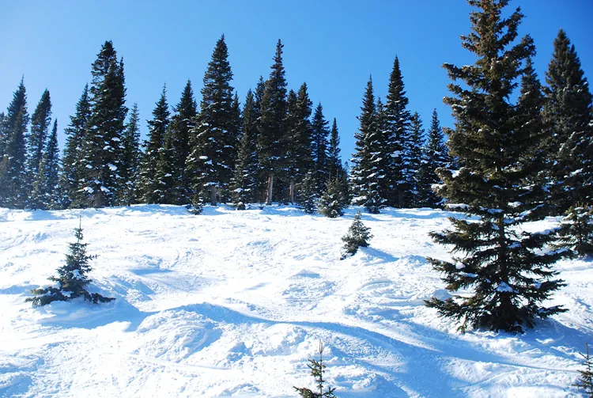

Wolf Creek, Wolf Creek Pass, Colorado · Ski conditions
Wolf Creek Conditions and Webcams Today
Wolf Creek's webcams and kid facts: kids' lessons from age 5, a tot ticket for 5 and under, no childcare named. Pagosa Springs is 23 miles away, Wolf Creek says.
Family of 4 lift tickets (2 adults, 2 kids 6-12): about $286 a regular day; $204 if both kids are 5 or under (our sum of posted prices, estimate) (read Nov 17; prices below).
Researched with AI (Miles Rowan) · sources linked and dated · How we check
Is it open? From Wolf Creek's own site
For open lifts, check Wolf Creek's snow report.
What the webcams show
No cam read from us yet. Cam reads show here only when a recent one has passed a separate automated accuracy check.

Plan the day with kids
- Season and hours: No 2026/27 schedule posted. Lifts normally run 8:30am-4pm (9am early season or in big storms); the ticket office opens 8:15am.
- Childcare: None named on the Wolf Creek pages we read. The Wolf Pup Center is for kids in lessons only.
- Lessons: Wolf Pups (ski) and Wolf Riders (snowboard), ages 5-8: 10am-12pm and 1-3pm, lift ticket included, lunch on full days. Ages 9-12: beginner or Hot Shots groups.
- Book ahead: Lessons and rentals must be pre-purchased at least 2 days ahead. Online tickets and lessons open once Wolf Creek runs 7 days a week; no day tickets after 1pm.
- Lesson meeting spot: Wolf Pup Center, uphill from Wolf Creek Lodge next to the Nova lift. Beginner and Hot Shots ski groups meet at the Lynx Learning Center behind the rental shop.
- Parking: No overnight parking except the Snowshed (Overflow) lot. We couldn't read the parking page, so check it for day rules.
Ticket and lesson prices on Wolf Creek's pages, read Nov 17:
- Family of 4 lift tickets, regular day (2 adults 13-64, 2 kids 6-12): $286 (our sum of posted prices, estimate)
- Same family on a peak date: $334 (our sum of posted prices, estimate)
- Family of 4 with 2 kids 5 and under, regular day: $204 (our sum: tots $6 each, estimate)
- All-day ticket, adult / child 6-12 / tot 5 and under: $96 / $47 / $6 regular; $110 / $57 / $6 peak
- Local Appreciation Days, adult / child: $73 / $36 (select days, Nov 2026-Apr 2027; the page we read doesn't list which)
- Wolf Pups ski lesson, ages 5-8, full day with lift ticket and lunch: $152 (half day with snack $119)
- Child ski rental, per day: $24 ($10 more on peak dates)
From Wolf Creek's 2026-2027 tickets page and lessons page, read Nov 17. Peak dates: Dec 20-23 and 26-31, Jan 1-2 and 16-17, Feb 12-14, Mar 14-18. No tax line. Tickets are non-refundable; no compensation for weather.
Lift tickets and lessons: It posts no childcare, and day-parking rules sit on a page that didn't load for us; check live. See Wolf Creek 2026-2027 tickets and passes.
From Wolf Creek snow report (updated Nov 15, 2026), Wolf Creek: the mountain, Wolf Creek lessons, Getting to Wolf Creek and Wolf Creek home page (hours), read Nov 17.
Getting there from Pagosa Springs and Durango
- Car: Wolf Creek is on US 160 on Wolf Creek Pass. Pagosa Springs 23 miles, South Fork 18 miles, Alamosa 65 miles, Durango 80 miles, per Wolf Creek. It posts no drive times.
- Nearest airports Wolf Creek lists: Durango-La Plata (80 miles) and San Luis Valley Regional in Alamosa (68 miles). Denver is 282 miles.
- Wolf Creek points to CoTrip.org (Colorado) and NMRoads.com for road conditions before you drive.
If the snow is thin
- Wolf Creek gives no compensation for weather, lift lines or snow conditions, and unused tickets are non-refundable. Online tickets can move to another date 48 hours or more ahead for a fee.
- Private lessons are non-refundable; we found no refund policy for group lessons.
- We found no tubing, sledding or indoor play named on the Wolf Creek pages we read.
From Wolf Creek 2026-2027 tickets and passes and Wolf Creek lessons and Wolf Creek: the mountain, read Nov 17.
Cam by cam
The 3 Wolf Creek cam views our reader uses, in our own descriptive words (see Wolf Creek's own cam page, as listed in our cam feed Nov 17): Base area, Treasure Stoke lift line, Summit. Once our reads start, each cam's last read time shows here.
How we read the cams: a program looks at Wolf Creek's public webcam pictures and notes only what a picture can show: fresh snow, snow cover, snowmaking, moving lifts, how busy the base looks, visibility and the snow stake. Each read shows its time; after 90 minutes it is marked older, after 6 hours it is hidden. We never say whether terrain is safe, icy, groomed or open; Wolf Creek's own report decides that. We don't show the cam pictures or count people.
Sources: Wolf Creek webcams · Wolf Creek home page (hours) · Wolf Creek lessons · Getting to Wolf Creek · Wolf Creek snow report (updated Nov 15, 2026) · Wolf Creek: the mountain (read Nov 17). We haven't skied Wolf Creek.